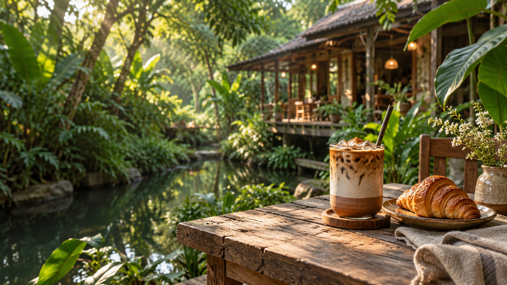

กาแฟที่ค่อย ๆ ชง
เราเลือกเมล็ดที่มีกลิ่นหอมละมุน แล้วชงแก้วต่อแก้วให้รสชาติชัดพอดี
กาแฟบ้านสวน / coffee in the garden
กาแฟคั่วสด ขนมอบจากครัวเล็ก ๆ และที่นั่งใต้ร่มไม้ สำหรับวันที่อยากพักจากเสียงดังรอบตัว

ที่นี่ไม่มีเมนูที่ต้องรีบเลือก ไม่มีเพลงที่ต้องเปิดดัง เราอยากให้กาแฟบ้านสวนเป็นพื้นที่เรียบง่ายที่คุณแวะมาได้ในแบบของตัวเอง — จะมานั่งอ่านหนังสือ คุยกับเพื่อน หรือแค่ปล่อยใจมองต้นไม้ก็ได้
ดูเวลาและการเดินทางเราเลือกเมล็ดที่มีกลิ่นหอมละมุน แล้วชงแก้วต่อแก้วให้รสชาติชัดพอดี
ขนมทำในครัวบ้านสวน และเราเลือกใช้วัตถุดิบตามฤดูกาลเท่าที่หาได้
โต๊ะเล็กในบ้าน ม้านั่งใต้ต้นไม้ หรือมุมเงียบ ๆ ให้เลือกตามอารมณ์
ถ้าวันนี้มีเวลาไม่มาก แวะรับกาแฟและขนมกลับไปต่อได้เลย
เมนูตัวอย่างเพื่อช่วยให้เลือกง่ายขึ้น สั่งแยกได้ทุกเมนู
* ราคาและเมนูอาจเปลี่ยนตามวัตถุดิบประจำวัน
กาแฟบ้านสวนเปิดทุกวัน เวลา 08:00–17:00 น. หากมีวันหยุดพิเศษจะแจ้งผ่านช่องทางของร้าน
มีพื้นที่จอดรถสำหรับลูกค้าที่แวะมาที่ร้าน รายละเอียดเส้นทางดูได้จากส่วน “แวะมาหาเรา” ด้านล่าง
พื้นที่สวนด้านนอกยินดีต้อนรับสัตว์เลี้ยง กรุณาดูแลน้อง ๆ ให้อยู่ใกล้ตัวระหว่างใช้บริการ
สั่งกลับบ้านได้ที่หน้าร้าน หากต้องการสั่งล่วงหน้า กรุณาติดต่อร้านโดยตรงเพื่อเช็กคิวและเมนูประจำวัน
แวะมานั่งเล่นที่กาแฟบ้านสวน
เราจะเตรียมที่เงียบ ๆ และกาแฟอุ่น ๆ ไว้ให้